Estación de Trabajo Visual y DevOps Integral para Entornos Contenerizados en Linux (GTK+ 3 & Python 3).
DDEV Studio es una estación de trabajo gráfica de nivel empresarial construida en Python 3 y GTK+ 3 (PyGObject) concebida para transformar radicalmente la experiencia de desarrollo local con Docker y DDEV en entornos GNU/Linux (Ubuntu, Debian, Fedora, Arch Linux).
threading.Thread) y canaliza eventos a GTK de manera segura exclusivamente mediante GLib.idle_add().shlex.quote.DEFAULT_SITES_DIR y variables de entorno estándar.
La vista central de la aplicación proporciona una vista unificada de todos los proyectos DDEV registrados en la máquina, monitoreando su estado en vivo mediante ddev list -j.
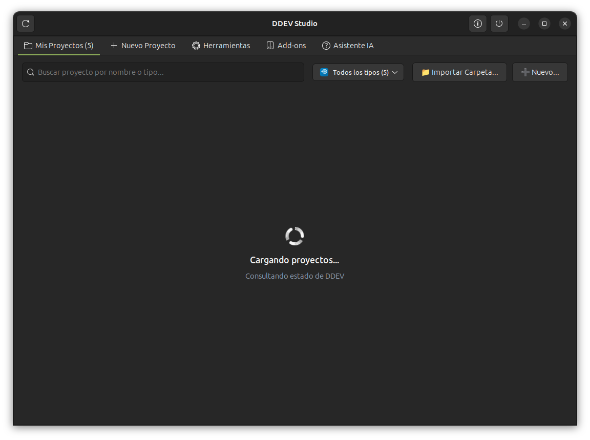
Iniciar / Detener, Abrir Web (HTTPS en el navegador predeterminado), Terminal (abre la terminal nativa del sistema en el docroot), Carpeta (gestor de archivos con xdg-open), Detalles y Eliminar.
Al seleccionar un proyecto, ProjectDetailsView ejecuta una inspección técnica profunda mediante ddev describe -j, parseando runtimes, servicios auxiliares, puertos mapeados y estado de depuración.
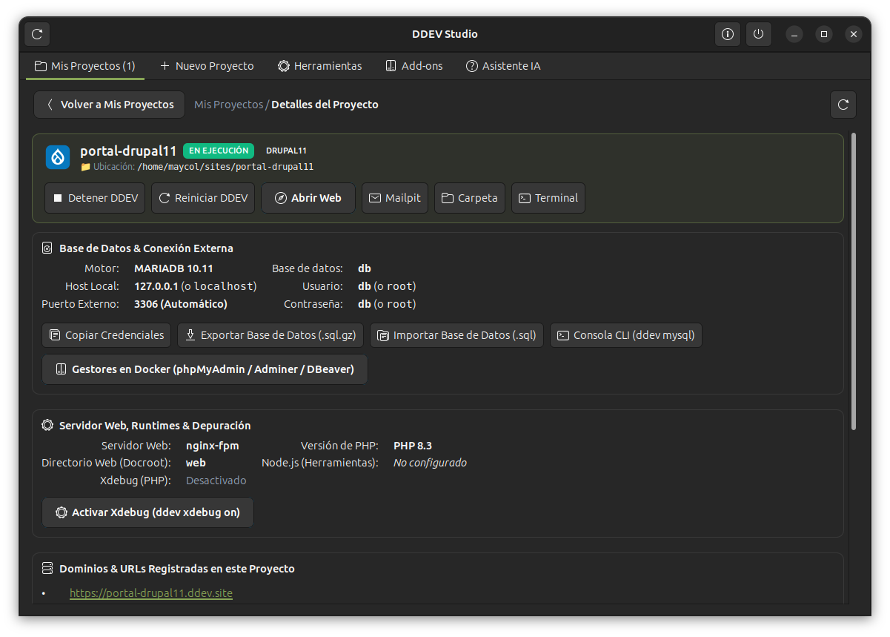
ON / OFF que consulta y conmuta el estado de depuración paso a paso (ddev xdebug on / off) sin necesidad de reiniciar los contenedores.8026 con botón directo de apertura web.ddev logs -f), abrir consola web interactiva (ddev ssh) o lanzar una terminal en el directorio del proyecto.ddev export-db --file=... con compresión .sql.gz en segundo plano..sql, .sql.gz, .tar.gz o .zip con advertencia preventiva de sobreescritura.DDEV Studio cuenta con un subsistema inteligente de gestión de bases de datos que distingue entre bases de datos contenerizadas y bases de datos locales en archivo embebido.
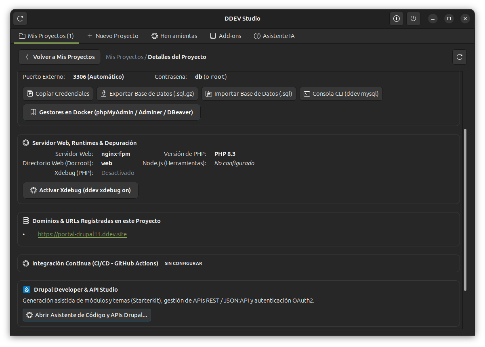
| Motor / Gestor | Tipo | Puerto Predeterminado | Comportamiento en DDEV Studio |
|---|---|---|---|
| MariaDB / MySQL | Contenedor Docker | 3306 / Asignado | Muestra host 127.0.0.1, usuario, contraseña, BD y botón de copia CLI. |
| PostgreSQL | Contenedor Docker | 5432 / Asignado | Soporte nativo con pooling y credenciales de conexión estructuradas. |
| SQLite Local | Archivo Embebido | Sin puerto (0 MB RAM) | Reporta 0 MB de consumo en Docker, ruta exacta del .sqlite y su tamaño en disco. |
| phpMyAdmin | Add-on Web | 8037 (HTTPS) | Detección automática de instalación; 1 clic para abrir en navegador. |
| Adminer | Add-on Web | 9101 (HTTPS) | Gestor ultraliviano para inspección rápida de esquemas SQL. |
| CloudBeaver (DBeaver) | Add-on Web | 8979 (HTTPS) | IDE de base de datos moderno completo ejecutándose en contenedor. |
Para evitar el cambio constante a la terminal en tareas repetitivas, la vista de Detalles detecta la tecnología del proyecto (core/framework_tools.py) y renderiza un panel de herramientas contextuales dedicado con iconos simbólicos y feedback visual.
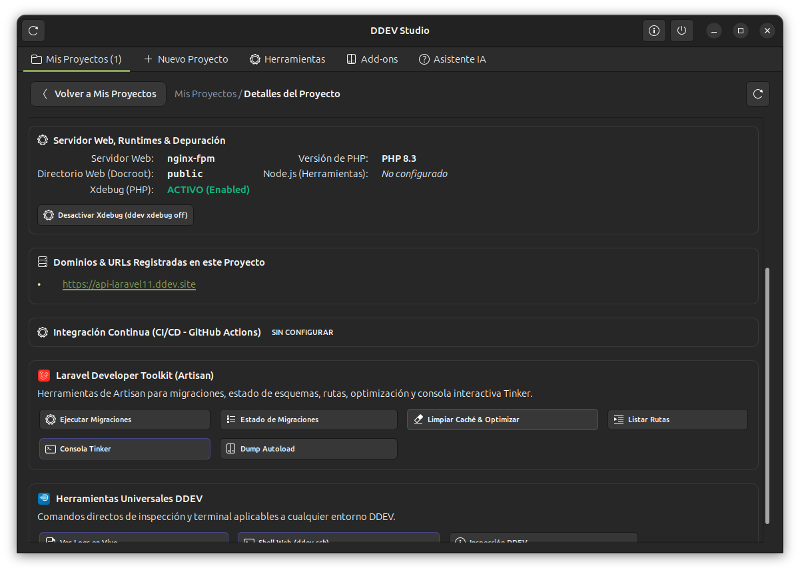
| Framework | Icono | Acciones de Terminal Interactivas | Acciones Asíncronas en Background |
|---|---|---|---|
| Laravel | laravel.svg |
php artisan tinker |
artisan migrate, migrate:status, optimize:clear, route:list, dump-autoload |
| Django | django.svg |
manage.py createsuperuser, manage.py shell |
manage.py migrate, makemigrations, showmigrations, collectstatic |
| WordPress | wordpress.svg |
wp shell |
wp cache flush, wp plugin list, wp plugin update --all, wp rewrite flush |
| Symfony | symfony.svg |
bin/console (shell interactivo) |
cache:clear, doctrine:migrations:migrate, debug:router |
| Frontend SPA / Node.js | nextjs / react / vue.svg |
ddev npm (consola) |
npm install, npm run build, npm test |
| Python Genérico | python / flask.svg |
ddev exec python |
pip list, pip install -r requirements.txt |
El asistente de creación (NewProjectView) implementa el Patrón Estrategia para orquestar la descarga, configuración de contenedores, aprovisionamiento de dependencias e inicio desatendido de 11 plataformas tecnológicas.
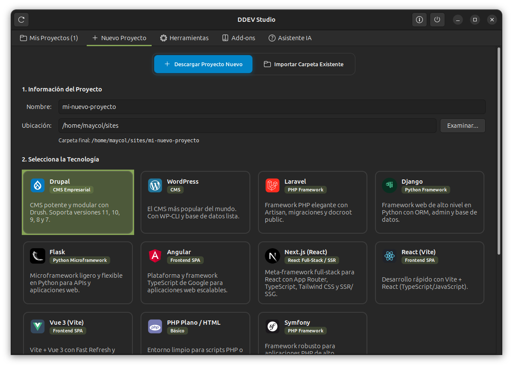
recommended-project, instalación de Drush, ejecución de drush site:install standard con credenciales admin/admin y soporte multisitio.wp core download y provisión desatendida vía WP-CLI.composer create-project laravel/laravel ., generación de .env, configuración de SQLite/MySQL y ejecución forzada de migraciones.symfony/skeleton con Composer, instalación de webapp-pack y configuración de variables de entorno..venv), instalación de dependencias, reverse proxy Nginx hacia puerto 8000/5000 y daemon de segundo plano en .ddev/config.daemon.yaml ejecutando runserver.npm run dev.
El modo de importación permite incorporar cualquier código fuente o repositorio existente en el disco duro. El módulo core/detector.py analiza la estructura de archivos e infiere la configuración óptima.
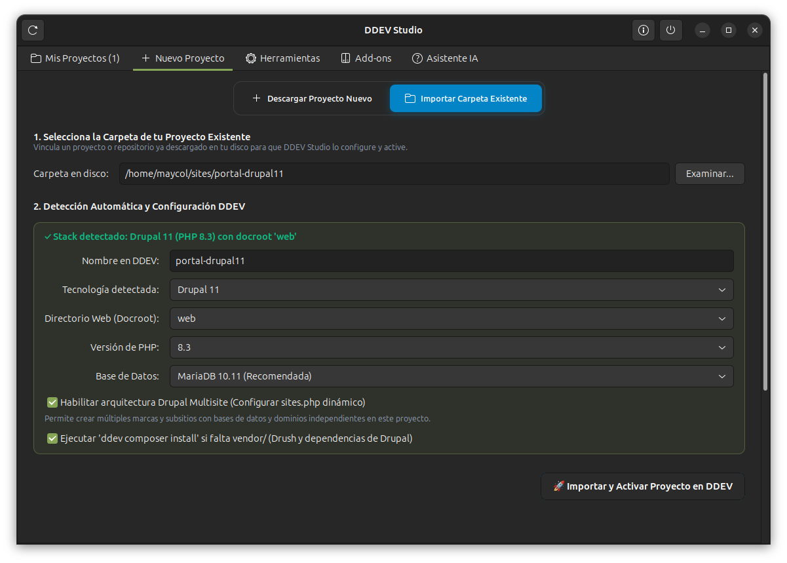
artisan ➔ Sugiere Laravel, PHP 8.2/8.3 y docroot public.core/lib/Drupal.php ➔ Sugiere Drupal con docroot web o docroot.wp-config.php o wp-load.php ➔ Sugiere WordPress y docroot adecuado.manage.py / requirements.txt ➔ Sugiere Django / Python con Nginx proxy.next.config.* / vite.config.* ➔ Sugiere Next.js, React o Vue con Node.js y proxy WebSocket.
La pestaña Herramientas (GlobalToolsView) centraliza el mantenimiento y la supervisión del entorno Docker y DDEV en toda la máquina anfitriona.
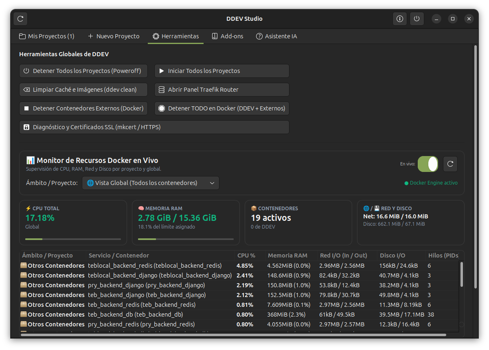
http://127.0.0.1:10999.ddev poweroff y detiene contenedores externos con un único clic.~/sites).
Implementado en core/docker_monitor.py y ui/views/docker_monitor.py, este monitor provee visibilidad total del consumo de hardware de los contenedores Docker mediante muestreo no bloqueante con docker stats --no-stream --format '{{json .}}'.
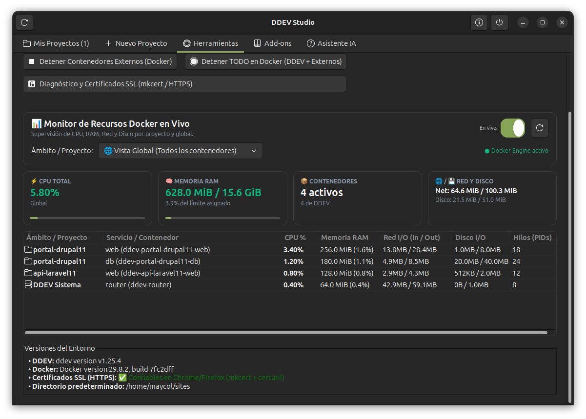
⏹ Detener Contenedor (docker stop).🔄 Reiniciar Contenedor (docker restart).📋 Ver Logs Recientes (abre visor con las últimas 150 líneas de salida estándar).💻 Abrir Terminal (docker exec) (lanza terminal interactiva dentro del contenedor).
La pestaña Add-ons (ui/views/addons.py) provee un catálogo visual para enriquecer cualquier proyecto con servicios auxiliares contenerizados mediante el ecosistema oficial y comunitario de complementos DDEV.
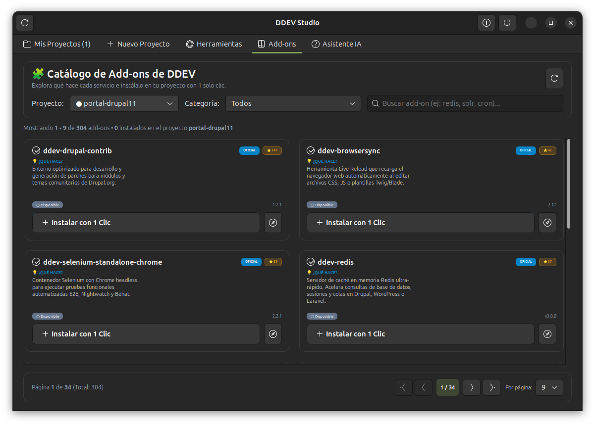
| Categoría | Add-on ID | Descripción y Caso de Uso |
|---|---|---|
| Bases de Datos & Caché | ddev-redis |
Servidor Redis en memoria para caché de objetos, sesiones y colas de alta velocidad. |
| Bases de Datos & Caché | ddev-memcached |
Caché distribuido en memoria tradicional para Drupal y WordPress. |
| Bases de Datos & Caché | ddev-mongo |
Base de datos NoSQL documental MongoDB con soporte de extensión PHP. |
| Motores de Búsqueda | ddev-solr |
Apache Solr preconfigurado para Drupal Search API y motores de indexación avanzada. |
| Motores de Búsqueda | ddev-elasticsearch |
Cluster de Elasticsearch para búsqueda full-text y analítica de datos. |
| DevOps & Colas | ddev-cron |
Ejecución periódica de tareas programadas tipo crontab en el contenedor web. |
| DevOps & Colas | ddev-rabbitmq |
Broker de mensajería AMQP con panel de administración web integrado. |
| Testing & QA | ddev-selenium-standalone-chrome |
Ejecución desatendida de pruebas funcionales y end-to-end con Chrome headless. |
| Frontend & DX | ddev-browsersync |
Recarga automática del navegador al modificar hojas de estilo CSS o scripts JS. |
Para proyectos basados en Drupal (versiones 7 a 11), DDEV Studio ofrece una suite de herramientas de nivel arquitectónico (ui/views/drupal_tools.py) que automatiza la generación de esqueletos de código limpio cumpliendo los estándares de la comunidad.
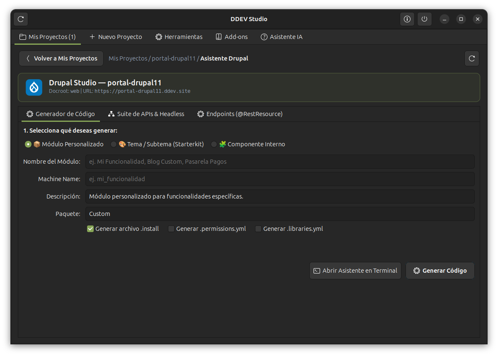
modules/custom/<nombre> con archivos .info.yml, .module y permisos..routing.yml y retorno de render arrays.getFormId(), buildForm(), validateForm() y submitForm().
El generador de temas soporta tanto la herramienta moderna de Drupal 10/11 (starterkit) como subtemas clásicos para Drupal 8 y 9, integrando presets guiados para los frameworks CSS más populares.
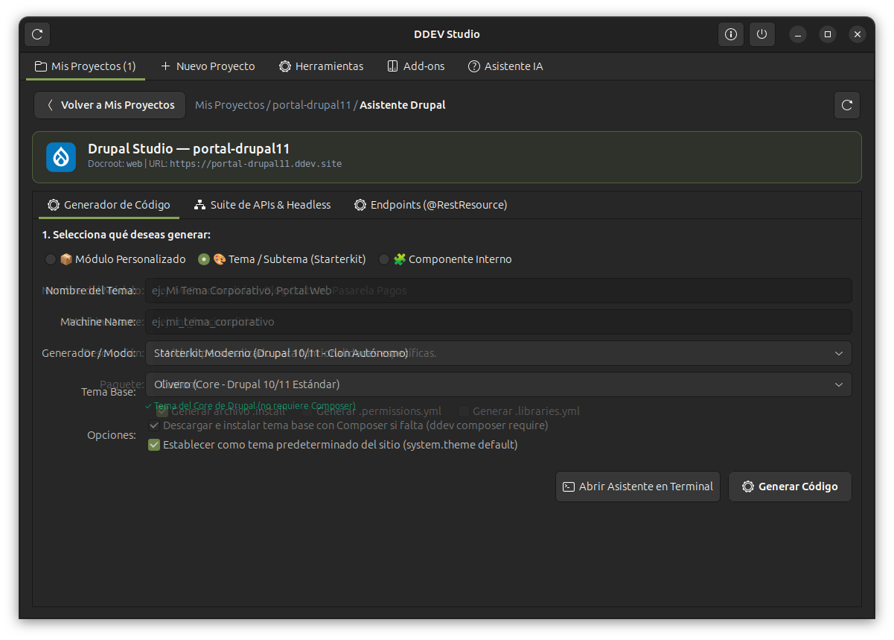
drupal/bootstrap5.
La pestaña de APIs y Módulos Fundamentales escanea en vivo el estado de extensiones habilitadas mediante drush pm:list --status=enabled --format=json y presenta una matriz interactiva organizada por categorías en Gtk.FlowBox.
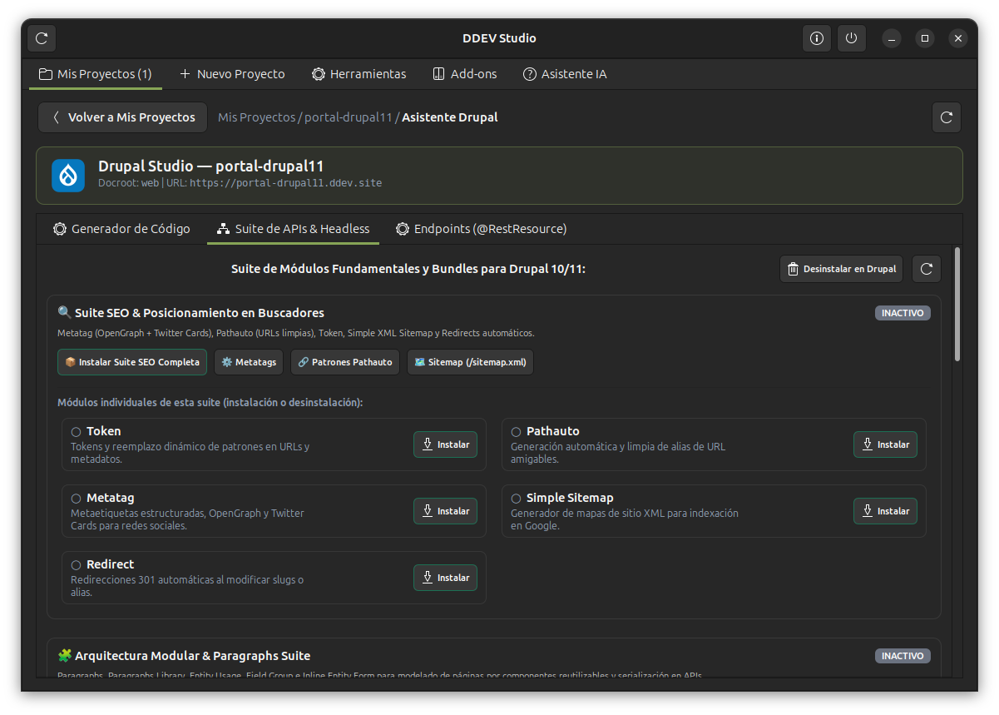
| Paquete | Módulos Incluidos | Utilidad Técnica |
|---|---|---|
| Core APIs (Headless) | rest, jsonapi, serialization, basic_auth |
Exposición inmediata de la arquitectura Decoupled / Headless con JSON:API y serialización nativa. |
| Productividad & UX | admin_toolbar, admin_toolbar_tools |
Menús desplegables con caché optimizada para administración veloz. |
| Desarrollo & Debugging | devel, devel_generate, kint |
Generación de datos dummy (nodos, usuarios, taxonomías) e inspección de variables PHP en vivo. |
| SEO & Metadatos | pathauto, token, metatag, redirect |
Generación automática de URLs amigables, redirecciones 301 y etiquetas OpenGraph/Twitter Card. |
La vista SubsitesManagerView administra arquitecturas donde un único codebase central de Drupal sirve a múltiples dominios independientes con sus propias bases de datos y configuraciones aisladas en sites/<subsitio>.
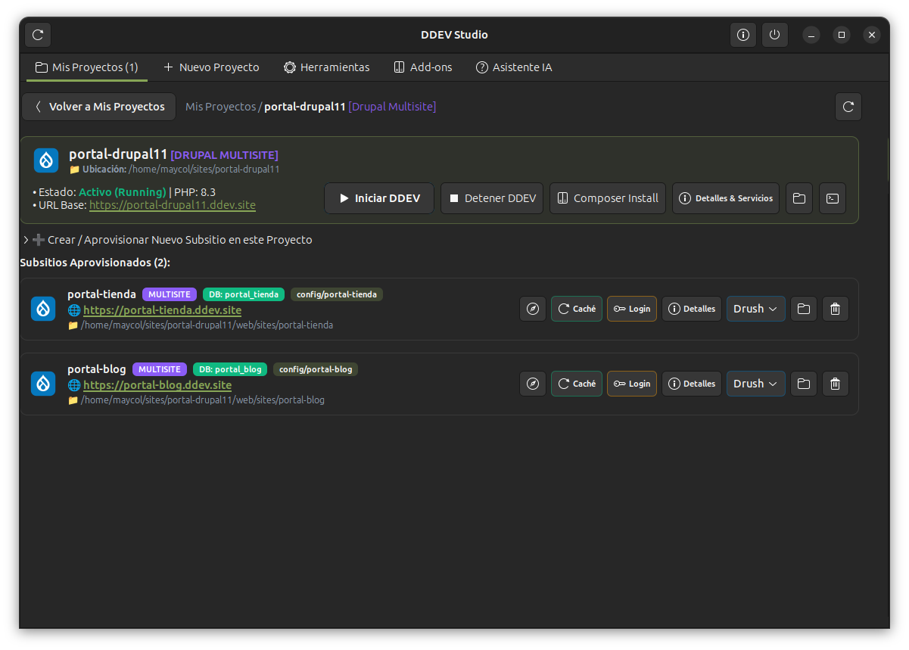
tienda), DDEV Studio actualiza de forma atómica additional_fqdns en .ddev/config.yaml, habilitando https://tienda.ddev.site.sites/sites.php para que Drupal resuelva la carpeta correcta según el host entrante.db_subsitio) sin colisionar con el sitio principal.--uri=https://<subsitio>.ddev.site.
DDEV Studio incorpora una estación de asistencia con Inteligencia Artificial 100% local, privada y offline conectándose directamente con el daemon de Ollama (puerto 11434) mediante peticiones HTTP REST estándar, sin dependencias pesadas de Machine Learning en Python.
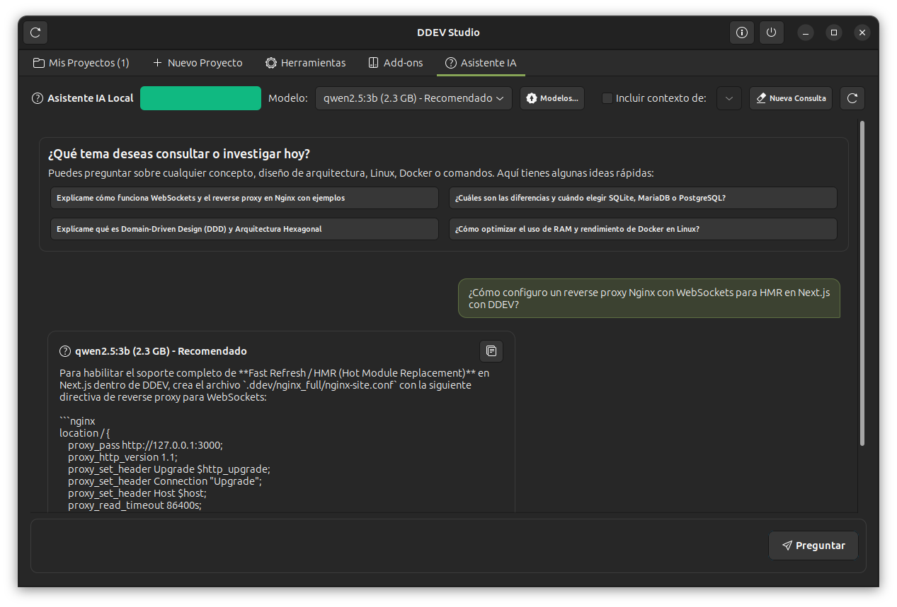
stop_generation).system_prompt.Ctrl + Enter o Enter y desplazamiento automático (autoscroll) fluido.Si el usuario no tiene Ollama instalado o no ha descargado ningún modelo, la vista conmuta reactivamente a una pantalla guiada de instalación y descarga.
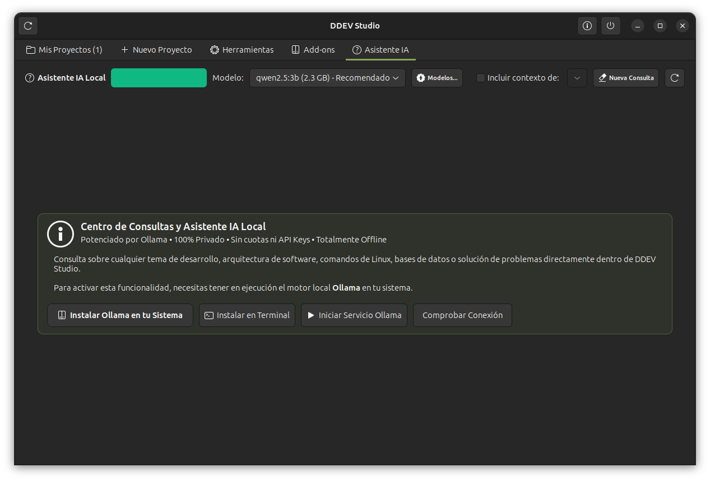
| Modelo | Parámetros / Peso | Especialización Técnica |
|---|---|---|
| llama3.2:3b | 3B Parámetros (2.0 GB) | Excelente modelo multipropósito de Meta; óptimo en redacción, análisis y soporte en español. |
| qwen2.5:3b | 3B Parámetros (2.3 GB) | Sobresaliente en DevOps, Docker, Nginx, scripts shell Linux, redes y solución de problemas técnicos. |
| qwen2.5-coder:1.5b | 1.5B Parámetros (1.0 GB) | Ultra liviano y extremadamente rápido; ideal para equipos con recursos de hardware limitados. |
| phi3.5:3.8b | 3.8B Parámetros (2.2 GB) | Modelo de Microsoft con alto poder de razonamiento lógico y explicaciones didácticas paso a paso. |
Uno de los dolores de cabeza más comunes en el desarrollo web local con HTTPS es el error del navegador NET::ERR_CERT_AUTHORITY_INVALID ("La conexión no es privada"). El diálogo modal SSLDiagDialog provee un diagnóstico paso a paso y solución asistida en 1 clic.
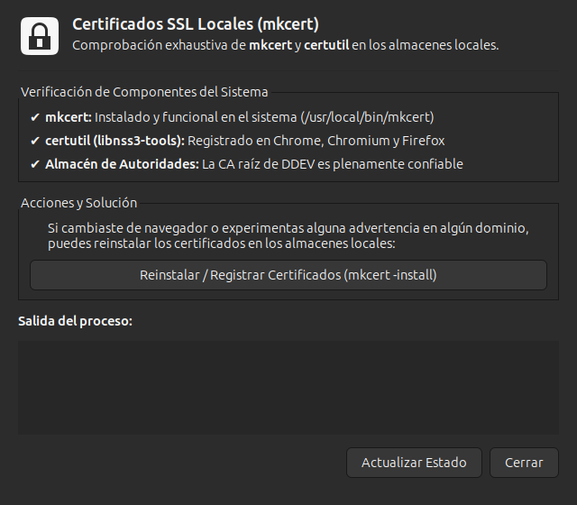
mkcert está disponible en el PATH del sistema (ej. /usr/local/bin/mkcert).mkcert -install en segundo plano para registrar el certificado de DDEV en los almacenes locales del navegador, resolviendo el candado verde HTTPS de forma permanente.
Para proyectos con repositorio Git (.git), CIDialog (core/ci_templates.py) detecta la tecnología en uso y genera workflows de GitHub Actions probados en contenedor con matrices de compatibilidad.
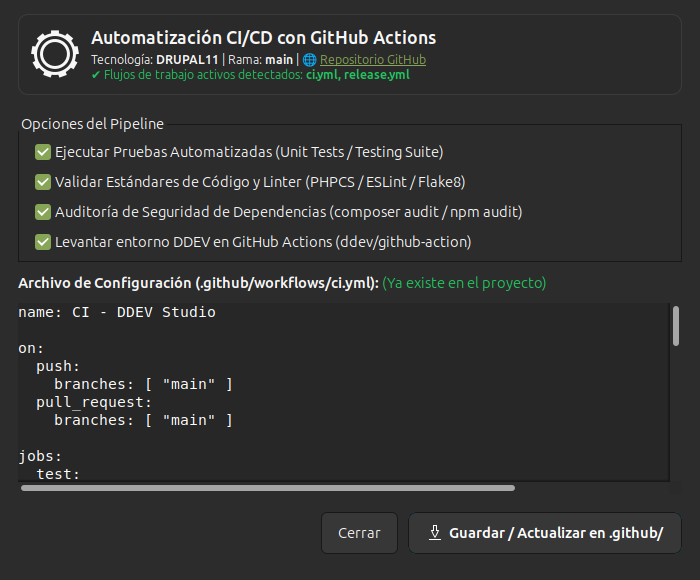
El archivo .github/workflows/ddev-ci.yml incluye:
ubuntu-latest de GitHub.ddev start.
En Drupal, desinstalar un módulo que posee dependencias activas puede romper la base de datos o el contenedor de dependencias. Para prevenir esto, DDEV Studio implementa el diálogo modal inteligente DrupalUninstallDialog.
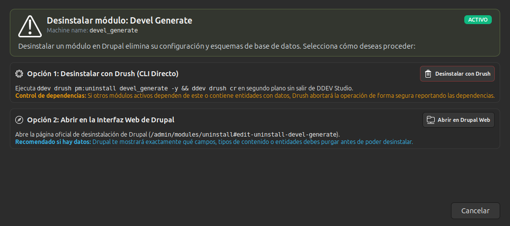
drush pm:uninstall <modulo> -y seguido de drush cr en segundo plano con control de errores. Si el módulo tiene dependencias bloqueantes, captura la salida y ofrece abrir la vía web./admin/modules/uninstall#edit-uninstall-<modulo>), permitiendo al desarrollador revisar en pantalla qué tablas o campos serán eliminados.
Todas las operaciones que consumen tiempo (descargas de paquetes Composer, instalación de add-ons, exportación de bases de datos, etc.) se presentan a través del diálogo modal unificado ProgressDialog.
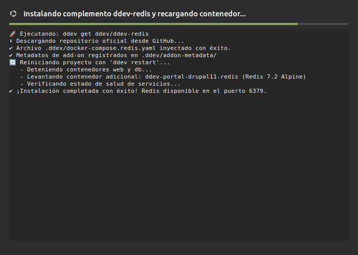
stdout y stderr en una vista de texto de consola con desplazamiento automático.🌐 Abrir en Navegador y 📁 Abrir Carpeta.El diálogo de información de la aplicación resume la versión del software, licencia de distribución libre y atribución de tecnologías base.
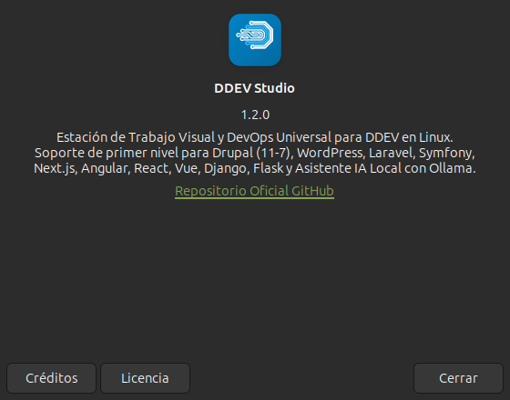